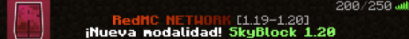
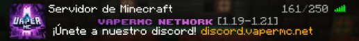
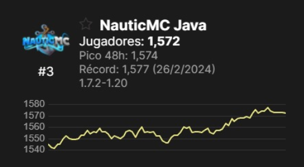

Administración, Configuración y Desarrollo en Minecraft
Configurador y desarrollador de servidores Minecraft. Especializado en modalidades completas, resolución de bugs y creación de plugins personalizados.
Experiencia
Actualmente:
- RedMC (Head-Dev) – Cuando entré como config, se me encargaban tareas variadas y a veces la solución de algún bug. Ahora como Head-Dev, organizo a las demás personas del equipo de Desarrollo y me encargo del desarrollo de modalidades completas, resolución de bugs más complejos y creación de plugins.
Ver la prueba  - VaperMC (Head-Dev) – Al igual que en RedMC, me encargo de la organización del equipo, creación de modalidades enteras, resolución de errores y creación de plugins
Ver la prueba 
Anteriormente:
- NauticMC (Admin) – Es el servidor del Creador de Contenido vMario (>4M subs). Estuve trabajando en este servidor durante casi 2 años. Mi trabajo era el de coordinar al staff y administración del servidor
Ver la prueba | Serie Staff Series  - KeiferMC (Configurador y Desarrollador) – En este servidor preparé algunos eventos para un youtuber de más de 5M de subs (KeiferMC). Cuando no usa el server para eventos, tiene un survival también en parte configurado por mi.
- Zaphirus (Owner & Dev) – Fui dueño de este servidor, el cual no siguió adelante por falta de fondos. Pensamos en retomarlo en un futuro no muy cercano, cuando tengamos forma de promocionarlo mejor, por ejemplo, con un canal de youtube. Me encargaba de toda la configuración, era el único desarrollador de toda la net. También me encargué de una parte de la construcción.
Ver la prueba - StoneCraft (Config) – Me contrataron en este servidor, pero tampoco salió adelante por los fondos y porque el dueño no supo promocionarlo bien.
Ver la prueba - Imperio de Biomas (Admin & Dev) – Una serie de Creadores de Contenido, donde me encargué del desarrollo completo del servidor y posibles bugs que aparecieran, fui el único configurador que hubo. También me encargué de la construcción (esto último no es mi fuerte).
Ver la prueba
Entre otros... tanto servidores como encargos individuales
Plugins Propios Públicos
Enlace a mi cuenta de GitHub- VelocityUtils Plugin diseñado para proxys Velocity que añade utilidades esenciales tanto para jugadores como para administradores. Su objetivo es simplificar la gestión de la network con funciones útiles, configurables y fáciles de usar. VelocityUtilsLink - Plugin para linkear el proxy con los backend para más funcionalidades.
- CustomChat Un plugin de chat moderno de Minecraft para servidores Paper con soporte completo de PlaceholderAPI y amplia personalización de mensajes.
- CustomPack Plugin que permite añadir un pack de servidor. Se puede añadir el pack como opcional para aplicar al usar con /texturepack. Junto con CustomPackVelocity se puede añadir un pack global.
- LitebansPunishments Añade un menú altamente customizable para ayudar al staff a sancionar más fácil y más rápido usando litebans (compatible también con otros plugins de baneos).
- Fork de SkywarsReloaded Fork del famoso plugin de skywars donde arreglo ciertos bugs y añado más funcionalidades.
- ClimateEvents Un plugin que añade varios eventos climáticos donde los jugadores tienen que resguardarse para evitar ser afectados.
- XrayDetector Añade notificaciones cuando un usuario rompe una cierta cantidad de minerales. Soporte para discord webhooks.
- CustomPrefixes Uno de mis primeros plugins. Permite a los usuarios customizar su prefix de luckperms cada cierto tiempo y con ciertas limitaciones.
Entre otros más...
Plugins que Domino
- Core del servidor: Essentials, LuckPerms, MultiverseCore, etc. **
- Menús: DeluxeMenus, CommandPanels *
- Tab & Scoreboard: TAB by Neznamy, AnimatedScoreboard *
- Sistema de sanciones: LibertyBans, LiteBans *
- Chat: AlonsoChat, ChatSentinel, Chatty, EzChat *
- Eventos e ítems custom: ConditionalEvents, ServerVariables, ExecutableItems, ItemEditor *
- Tienda: Tebex
- Otros: Forcepack, PlayerTimeLimit, Sleep-Most, DecentHolograms, Drop2Inventory, Realmines, Shopkeepers, etc **
* Los que mejor sé usar
** Hay muchos para citar